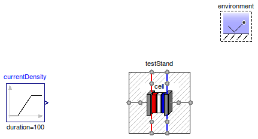
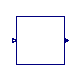
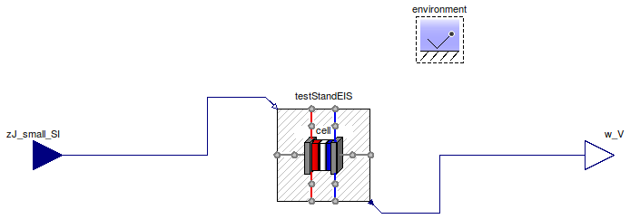

Table of Contents
- User's Guide
- Blocks
- Conditions
- Assemblies
- Regions
- Subregions
- Phases
- Species
- Connectors
- Characteristics
- Units
- Quantities
- Utilities
- Icons
Download
- Latest version (**Empty; please check back soon or contact kdavies4 at gmail.com.)
FCSys.Assemblies.Cells.Examples
ExamplesInformation
Extends from Modelica.Icons.ExamplesPackage (Icon for packages containing runnable examples).Package Content
| Name | Description |
|---|---|
Isolated Cell model | |
| Run a cell polarization | |
| Model for electrochemical-impedance spectroscopy |
 FCSys.Assemblies.Cells.Examples.Cell
FCSys.Assemblies.Cells.Examples.Cell
Isolated Cell model

Information
Extends from Modelica.Icons.Example (Icon for runnable examples).
Parameters
| Type | Name | Default | Description |
|---|---|---|---|
| Cell | cell | redeclare Cells.Cell cell | Fuel cell |
Modelica definition
model Cell "Isolated Cell model"
extends Modelica.Icons.Example;
// **Remove this model once Polarization is running.
inner FCSys.Conditions.Environment environment;
replaceable Cells.Cell cell "Fuel cell";
end Cell;
FCSys.Assemblies.Cells.Examples.Polarization
Run a cell polarization
Information
Extends from Modelica.Icons.Example (Icon for runnable examples).
Parameters
| Type | Name | Default | Description |
|---|---|---|---|
| Cell | cell | redeclare Cells.Cell cell | Fuel cell |
Modelica definition
model Polarization "Run a cell polarization" extends Modelica.Icons.Example; /* ** params=dict(comp=['"O2"'], anStoich=[1.5, 1.1, 2], caStoich=[9.5, 7.5, 12.5], anRH=[0.8, 0.6, 1], caRH=[0.5, 0.3, 0.7], T_degC=[60, 40, 80], p_kPag=[48.3, 0, 202.7]), */ inner FCSys.Conditions.Environment environment "Environmental conditions"; Conditions.TestStands.TestStand testStand( zJ=currentDensity.y, anInletRH(displayUnit="1") = 0.8, caInletRH(displayUnit="1") = 0.5, T_an=333.15*U.K, T_ca=333.15*U.K, anStoich=1.5, caStoich=2.0); replaceable Cells.Cell cell "Fuel cell"; Modelica.Blocks.Sources.Ramp currentDensity( height=100*U.A/U.cm^2, duration=100, startTime=0.1); equation connect(testStand.an, cell.an); connect(cell.ca, testStand.ca); connect(testStand.anPositive, cell.anPositive); connect(testStand.caNegative, cell.caNegative); connect(cell.anNegative, testStand.anNegative); connect(cell.caPositive, testStand.caPositive); end Polarization;
 FCSys.Assemblies.Cells.Examples.EIS
Model for electrochemical-impedance spectroscopy
Information
Extends from FCSys.Icons.Blocks.Continuous (Icon for a continuous-time block).
Parameters
| Type | Name | Default | Description |
|---|---|---|---|
| Current | zI_large_A | 100 | Large-signal current in amperes [A] |
| Cell | cell | redeclare FCSys.Assemblies.C… | Fuel cell model |
Connectors
| Type | Name | Description |
|---|---|---|
| input RealInput | zJ_small_SI | Small-signal current density in SI base units |
| output RealOutput | w_V | Cell potential in volts |
Modelica definition
model EIS "Model for electrochemical-impedance spectroscopy" import FCSys; extends FCSys.Icons.Blocks.Continuous; parameter Modelica.SIunits.Current zI_large_A=100 "Large-signal current in amperes"; Connectors.RealInput zJ_small_SI "Small-signal current density in SI base units"; Connectors.RealOutput w_V "Cell potential in volts"; Conditions.TestStands.TestStandEIS testStandEIS; replaceable FCSys.Assemblies.Cells.Cell cell "Fuel cell model"; inner FCSys.Conditions.Environment environment( analysis=false, p=149.6*U.kPa, T=333.15*U.K) "Environmental conditions"; equation connect(zJ_small_SI, testStandEIS.zJ_small_SI); connect(testStandEIS.w_V, w_V); connect(testStandEIS.caNegative, cell.caNegative); connect(testStandEIS.anPositive, cell.anPositive); connect(testStandEIS.an, cell.an); connect(cell.anNegative, testStandEIS.anNegative); connect(cell.caPositive, testStandEIS.caPositive); connect(cell.ca, testStandEIS.ca); end EIS;